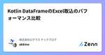
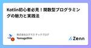

株式会社ログラス テックブログのフィード
https://zenn.dev/p/loglass
株式会社ログラスは「良い景気を作ろう。」をミッションに、企業経営を推進する次世代型経営管理クラウド「Loglass 経営管理」を開発し提供しています。
フィード

Kotlin DataFrameのExcel取込のパフォーマンス比較
株式会社ログラス テックブログのフィード
!この記事は毎週必ず記事がでるテックブログ"Loglass Tech Blog Sprint"の51週目の記事です！1年間連続達成まで 残り ２ 週 となりました！ はじめに6月からログラスでエンジニアをしている遠藤です！最近話題になっているJetBrains社純正ライブラリのKotlin DataFrameをご存知でしょうか。Pythonのpandasにインスパイアされているだけあって、機能がとても充実していて二次元配列を扱う際のつらみを解消してくれる使い勝手の良いデータ操作ライブラリです。今回は他のライブラリ（Apache POI, FastExcel）とのExce...
4日前

Kotlin初心者必見！関数型プログラミングの魅力と実践法
株式会社ログラス テックブログのフィード
はじめに!この記事は毎週必ず記事がでるテックブログ"Loglass Tech Blog Sprint"の50週目の記事です！1年間連続達成まで 残り 3 週 となりました！こんにちは、ログラスの山家です。ログラスではKotlinでバックエンド開発しており、関数型プログラミングを取り入れています。Kotlinと関数型プログラミングを始めた当初は、PHPでの開発経験しかなかったこともあり、Kotlinの言語仕様の理解と、関数型の考え方を習得するのにとても苦労しました。しかし、「なぜ関数型プログラミングを使うのか?」に対して解像度を高めることで、Kotlinの言語仕様や関数型...
11日前

LLM for 時系列分析の世界
株式会社ログラス テックブログのフィード
以前、【LT大会#7】LLMの活用・機械学習・データ分析関係のいろいろな話題にふれようで、時系列基盤モデルについてLTをさせて頂きました。https://speakerdeck.com/rkaga/the-world-of-time-series-foundation-models他発表者のLTも面白く、私自身も時系列基盤モデルについて理解を深める良いきっかけとなりましたが、心残りはLLMを絡めた手法については時間を割けなかったことです。そこで今回はLLM for 時系列分析に関するアイディアを簡単にまとめてみます。 おことわり学習目的で調査・作成した内容がベースとなっており...
15日前
新規参加メンバーにも優しいKotlinによる型安全な世界
株式会社ログラス テックブログのフィード
!この記事は毎週必ず記事がでるテックブログ"Loglass Tech Blog Sprint"の49週目の記事です！1年間連続達成まで 残り 4 週 となりました！はじめまして、5月にログラスに入社した三田(@eichisanden)です。ログラスに入社してから、型の恩恵を強く感じる場面が多くありました。今回は、私が特に良いと感じた実装方法をいくつか紹介したいと思います。※この記事のコードは、説明のために書いたサンプルコードになります sealed クラスによるパターンマッチで実装漏れを防ぐKotlinのsealedクラスとインターフェース(以下「sealedクラス」...
19日前
CRE探訪記
株式会社ログラス テックブログのフィード
!この記事は毎週必ず記事がでるテックブログ "Loglass Tech Blog Sprint" の 48週目の記事です！1年間連続達成まで 残り 5 週 となりました！ はじめにログラスでエンジニアをしている子田 @woody_kawagoe です！2024年2月に入社し、当初は機能開発チームに所属していましたが、途中からCRE（Customer Reliability Engineer）に社内留学しています。（別チームを体験するための一時的な異動）入社エントリはこちらもご覧ください。https://note.com/woody_kawagoe/n/na7d1801...
25日前
ログラスのTerraform構成とリファクタリングツールの紹介
株式会社ログラス テックブログのフィード
!この記事は毎週必ず記事がでるテックブログ "Loglass Tech Blog Sprint" の 47週目の記事です！1年間連続達成まで 残り 6 週 となりました！ はじめにログラスのクラウド基盤でエンジニアをやっているゲイン🐰です。ログラスではAWS上でアプリケーションを動かすためにIaCとしてTerraformを採用しています。我々のTerraformの構成を紹介するとともに、現状の課題とリファクタリングの事例を共有できれば幸いです。 ログラスのTerraform構成ざっくりログラスのアプリケーションにまつわるTerraform構成は以下のようになってい...
1ヶ月前
Nested Loop/Hash/Sort Merge結合の違いとパフォーマンス比較
株式会社ログラス テックブログのフィード
!この記事は毎週必ず記事がでるテックブログ "Loglass Tech Blog Sprint" の 46週目の記事です！1年間連続達成まで 残り 7 週 となりました！ はじめにこんにちは、ログラスでエンジニアをしてる福土です！SQLの結合アルゴリズムであるNested LoopHashSort Mergeについてご存知でしょうか？かくいう私はこの辺りのアルゴリズムを特に意識せずにこれまで開発をしてきており、この機会にそれぞれの結合アルゴリズムへの理解とそのパフォーマンスの差異について手を動かしながら理解したいと考え、今日に至ります。結合アルゴリズムに...
1ヶ月前
WACATE2024夏に参加しました
株式会社ログラス テックブログのフィード
はじめにみなさんこんにちは！夏ですね〜！暑いですね〜！今回、6/22・23の2日間に渡って行われた WACATEという勉強会に参加したので、レポートを書こうと思います。ゆるゆると書いていくので、ぜひ通勤時間の暇つぶしにでもお読み頂けると嬉しいです。https://wacate.jp/ WACATEってなに？WACATEとは、若手テストエンジニア向けのワークショップです！Workshop for Accelerating CApable Testing Engineers：内に秘めた可能性を持つテストエンジニアたちを加速させるためのワークショップ自分は最近知りま...
1ヶ月前
Kotlin脳内ランタイムクイズ(解答編)
株式会社ログラス テックブログのフィード
Kotlin 問題集この記事は Kotlin Fest 2024 のログラスブースでのクイズ企画の解答です。https://www.kotlinfest.dev/https://zenn.dev/loglass/articles/kotlin-questionhttps://x.com/LoglassPrdTeam/status/1804404958990872792 出力は？nullNullPointerException が throw されるfun main() { print(null.toString())} 答え1 の nullk...
1ヶ月前
Kotlin版Power Assertツール「Power-assert」の紹介
株式会社ログラス テックブログのフィード
!この記事は毎週必ず記事がでるテックブログ"Loglass Tech Blog Sprint"の45週目の記事です！1年間連続達成まで残り8週となりました！ はじめに株式会社ログラスでエンジニアをしております、中村です。既存のアサーションライブラリを使ったテストの書き方には癖があり、検証対象のパターンごとに適切な関数を使い分ける必要があります。世の中にはアサーションライブラリの使い方だけにフォーカスした記事も数多く存在し、これらの記事にお世話になった方も多いのではないでしょうか。かく言う私もお世話になったエンジニアのうちの一人で、テストとは直接関係のないところにコストをかけ...
2ヶ月前
Kotlin脳内ランタイムクイズ
株式会社ログラス テックブログのフィード
Kotlin 問題集この記事は Kotlin Fest 2024 のログラスブースでのクイズ企画です！https://www.kotlinfest.dev/ ルール皆さんの脳内で Kotlin のコードを実行し、結果を回答してください！PC で実行してはいけません 回答方法全問回答できたらブースにお越しください！https://x.com/LoglassPrdTeam/status/1804316646691213516全問正解者には Anker の充電器や技術書などの景品をご用意しております。※ 数に限りがあるため、先着順のお渡しになります お願い...
2ヶ月前
DDDにおける認可の扱いとKotlinでの実装パターン
株式会社ログラス テックブログのフィード
はじめにアドベントカレンダーで書いた認可のベストプラクティスの記事が結構反応を頂けたのですが、最終的な結論が ユースケースによる という投げやりなまとめになってしまっていたのが少し気になっていました。https://zenn.dev/loglass/articles/76e559f1a13776そこで、ユースケース別の実装パターンをより詳しく解説しようと思い、Kotlin Fest 2024にプロポーザルを出しました。が、力及ばずお見送りとなってしまいました。https://fortee.jp/kotlin-fest-2024/proposal/f388bc44-95c9-...
2ヶ月前
検査例外にさよなら！KotlinのRailway Oriented Programming by kotlin-result
株式会社ログラス テックブログのフィード
はじめに惜しくも(?) Kotlin Fest 2024で採択とならなかったセッションの供養を行います。とはいえ、全ての内容を網羅することはせず、かいつまんで話したかった内容を書いていきます。https://fortee.jp/kotlin-fest-2024 Railway Oriented Programmingとは？Railway Oriented ProgrammingとはScott Wlaschin氏によって提唱された設計です。詳細は全て無料でこちらから見れるのでぜひチェックしてみてください。https://fsharpforfunandprofit.com/...
2ヶ月前
Datadog でアラート通知の質を向上させるための取り組み
株式会社ログラス テックブログのフィード
!この記事は毎週必ず記事がでるテックブログ "Loglass Tech Blog Sprint" 44 週目の記事です！1 年間連続達成まで残り 9 週となりました！ はじめにはじめまして、2024 年 4 月にログラスにジョインしたエンジニアの石畑です。まだまだドメインやシステムについて学んでいる最中なのですが、その中でアラート監視・運用周りをより良くできそうだったので、試行錯誤したことをまとめたいと思います。 どんな課題があったのか？ログラスではフロントエンドからバックエンド、インフラに至る全てのログ・メトリクスが Datadog に集約され、横断的に分析・監視でき...
2ヶ月前
新機能のパフォーマンス課題を解決して安全にリリースするためにやったこと
株式会社ログラス テックブログのフィード
!この記事は毎週必ず記事がでるテックブログ "Loglass Tech Blog Sprint"の43週目の記事です！1年間連続達成まで 残り 10 週 となりました！ はじめにこんにちは、株式会社ログラスでエンジニアをしている上田（@ueda1013）です。ログラスへの入社後、最初に担当した新機能の開発では、ユーザー体験に重大な悪影響を及ぼす可能性のあるパフォーマンス課題に直面しました。今回の記事では、実際にどういったパフォーマンス課題に直面し、テストやチューニングを経て、どのように安全にリリースすることができたのか、その実践例をご紹介します。また今回は、パフォーマンス...
2ヶ月前
SQLクエリに対するスナップショットテストの実践例
株式会社ログラス テックブログのフィード
!この記事は毎週必ず記事がでるテックブログ "Loglass Tech Blog Sprint"の42週目の記事です！ 1年間連続達成まで 残り 11 週 となりました！ はじめにこんにちは、株式会社ログラスでエンジニアをしている田中です。以前、弊社の龍島が書いた記事でUIコンポーネント以外でのスナップショットテストの活用例として、集計や数値計算を行うエンドポイントの結合テストを紹介しました。今回の記事では、ORMを活用した際のSQLクエリに対するスナップショットテストの実践例をご紹介します。https://zenn.dev/loglass/articles/595a91...
2ヶ月前
KotlinでUnion Typeを使いこなそう
株式会社ログラス テックブログのフィード
!この記事は毎週必ず記事がでるテックブログ "Loglass Tech Blog Sprint"の41週目の記事です！ 1年間連続達成まで 残り 12 週 となりました！ はじめにこんにちは、株式会社ログラスでエンジニアをしています、Kyosukeです。私は前職では主にTypescriptでフロントエンド・バックエンドのどちらも開発を行っていたのですが、ログラスではフロントエンドにTypescript、バックエンドにKotlinを使用しています。そしてKotlinを書いていると、定期的にTypeScriptで言う、Union Typeを使いたくなることがあります。そこで、...
2ヶ月前
ログラスの非同期処理基盤の設計と導入
株式会社ログラス テックブログのフィード
!この記事は毎週必ず記事がでるテックブログ "Loglass Tech Blog Sprint" の 40週目の記事です！1年間連続達成まで 残り 13 週 となりました！こんにちは、ログラスでエンジニアをしております南部です。唐突ですが、みなさんは「非同期処理」の実装を行っていますか？非同期処理とは、プログラムの処理を他の処理と並行して行う方法です。これにより、ユーザーの操作がブロックされることなく、バックグラウンドで時間のかかる処理を実行することができます。Loglassではユーザーの大量のデータを取り扱うこともあり、非同期処理を多く利用しています。今までは単一の...
3ヶ月前
TestLinkの一部の機能をNotionで再現して、チームでテスト分析、設計を管理する試み
株式会社ログラス テックブログのフィード
!この記事は毎週必ず記事がでるテックブログ "Loglass Tech Blog Sprint" の 39 週目の記事です！1 年間連続達成まで 残り 14 週 となりました！ はじめにこんにちは、世界。ログラスでQAエンジニアを担当している大平です。現在、私はスクラムチームに所属してテスト活動をしています。今回は、スプリント期間内で実施しているテスト分析・設計やテストケースの管理に悩んでいたところを「TestLinkの一部の機能をNotionで再現して改善しよう」と実験した話です。スクラムチームでテスト活動をどう管理するかの参考になれば幸いです。 コンテキストと悩...
3ヶ月前
Yup フォーム・バリデーションの実装におけるデバッグ Tips
株式会社ログラス テックブログのフィード
!この記事は毎週必ず記事が出るテックブログ "Loglass Tech Blog Sprint" の 38 週目の記事です！1 年間連続達成まで 残り 15 週 となりました！Web アプリケーションでフォームの入力値バリデーションを実装するとき、Yup は強力で柔軟性が高いツールの一つです。Yup を利用すると、スキーマベースのアプローチで入力値のバリデーションを簡潔かつ効率的に行うことができます。https://github.com/jquense/yupしかし、複雑なフォームの実装になるとスキーマ定義の実装時、特に TypeScript を併用している環境では、型エ...
3ヶ月前